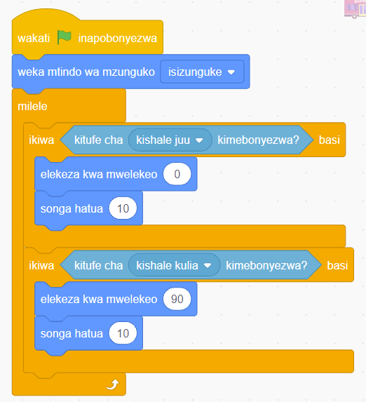

ya ‘ikiwa basi’ na uiunge kwenye bloku ya ‘elekeza kwa mwelekeo’ kama inavyoonekana katika Kielelezo namba 63.

Kielelezo namba 63: Bloku ya ikiwa basi imeungwa kwa mara ya pili
26. Kucheza mchezo wako, bofya au tumia mishale ‘Anza’. Kisha tumia kitufe cha kwenda juu na kitufe cha kwenda kulia vilivyopo kwenye kibodi ya kompyuta yako.
27. Unaweza badilisha hatua na nyuzi ili kuona mabadiliko ya mwendo na uelekeo wa ‘Sprite’ (City bus).